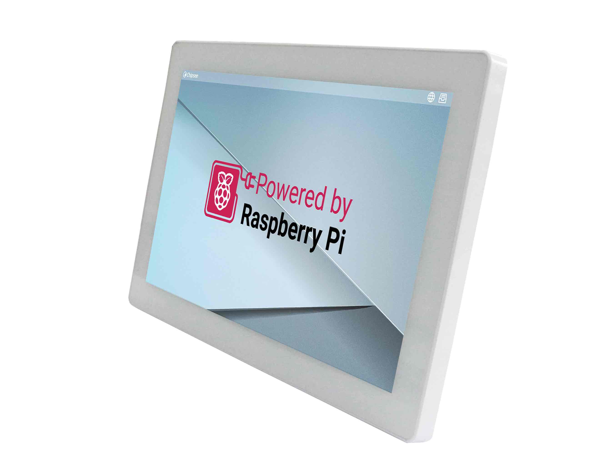
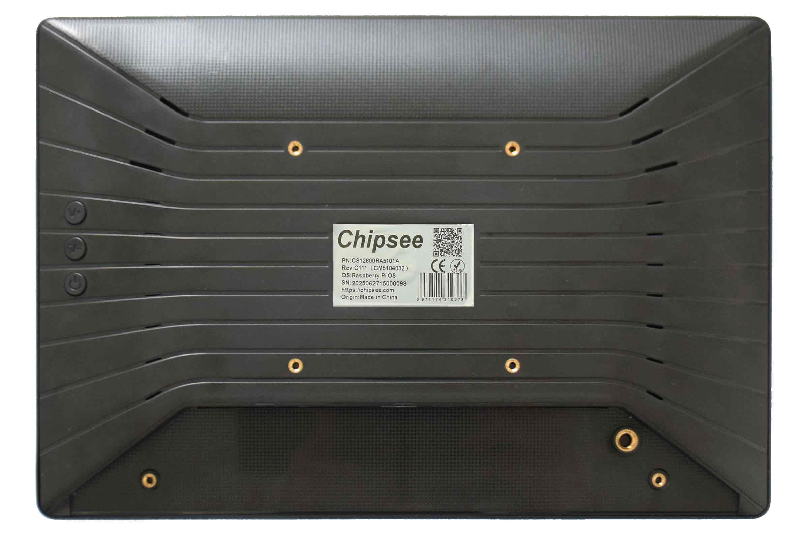
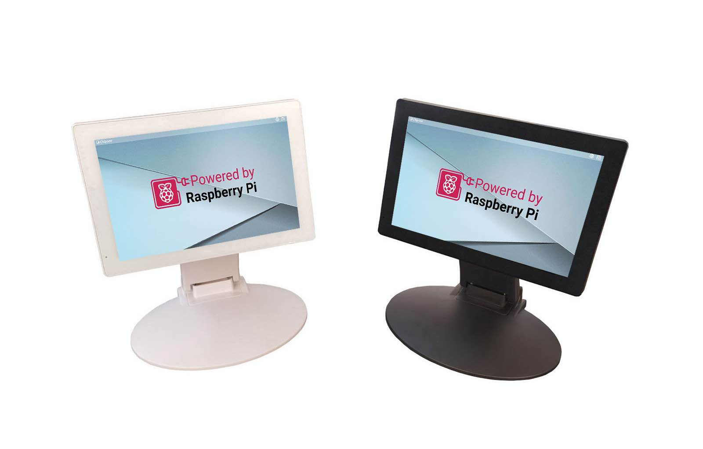
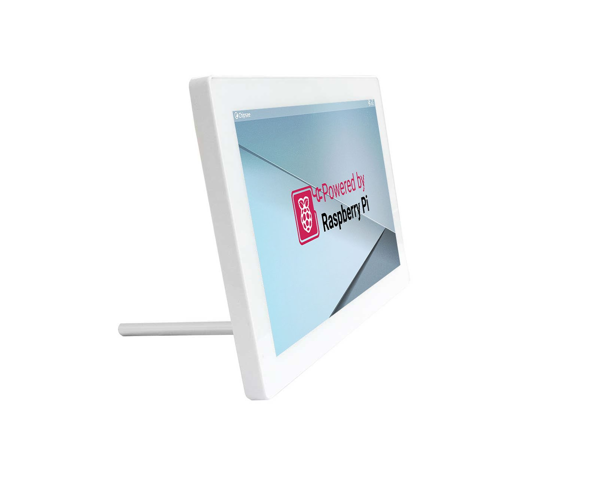

AIO-CM5-101¶
Version 1.0




Product Overview¶
The AIO-CM5-101 all in one Raspberry Pi PC (PN: CS12800RA5101A) is an all-in-one desktop computer based on Raspberry Pi® CM5.
Its case is plastic, very light to carry around, or mount it to a fixed place as a smart home control center. The case is available in Black / White color.
This single board computer features a 10.1” IPS display with a maximum brightness of 400 cd/m2. The touch screen is a responsive capacitive screen and supports multi touch.
The product is easy to use, perfect for developers and makers accustomed to the Raspberry Pi and is looking for a computer they can use daily, it handles 1080P video streaming easily and even 4K streaming, like the Raspberry Pi 5.
It is also fully compatible with the Raspberry Pi OS.
Ordering Options¶
Chipsee products can be customized during the ordering process. The product will be shipped with the pre-installed factory defaults if no extra requirements are specified. The table in the Hardware Features section provides information about the default options bundled with the product.
Note
You can order AIO-CM5-101 from the official Chipsee Store or from your nearest distributor.
Pi® CM5 Module¶
The Pi® Compute Module 5 appears in different versions (different RAM size: 2GB, 4GB, or 8GB SDRAM based on CM5 and different eMMC size: 0GB, 16GB, 32GB, or 64GB based on CM5).
The AIO-CM5-101 all in one Raspberry Pi PC does not include the CM5 Raspberry Pi® module by default.
If you would like to purchase it with a CM5, you can select it at the Chipsee store during the ordering process.
Operating System¶
This product comes with a pre-installed Raspberry Pi OS. Chipsee software engineers have created all the drivers, so every hardware feature is readily available for any standard development tool.
If your project requires a different OS, please Contact us, and we’ll make a customized version that suits your needs.
Optional Features¶
The AIO-CM5-101 all in one Raspberry Pi PC does not include the 3G/4G/LTE/GPS module by default. This module is optional and can be selected at the Chipsee store during the ordering process.
The product has a M.2 2230/2242 M-key slot, running at PCIe 2.0 x1 speed (PCIe 3.0 is possible but experimental for CM5), you can use it with your NVMe SSD or other modules that can fit in a m.2 2230/2242 M-key slot and supports the protocol. By default the NVMe SSD is not mounted.
The product’s RS232/RS485/CAN/Relay can be configured in the factory, these options are supported:
2 x RS232, 1 x RS485, 0 x CAN, 1 x Relay (default)
1 x RS232, 2 x RS485, 0 x CAN, 1 x Relay
1 x RS232, 1 x RS485, 1 x CAN, 1 x Relay
2 x RS232, 1 x RS485, 1 x CAN, 0 x Relay
Please contact us if you need option 2,3 or 4.
Warning
Hardware Features¶
The AIO-CM5-101 all in one Raspberry Pi PC offers a board range of performance and connectivity options for scalable integration, providing expandability according to future needs.
Some of the key features are listed in the table below.
AIO-CM5-101 |
|
|---|---|
CPU |
Raspberry Pi® CM5/CM5Lite; BCM2712 Quad(4) Core Cortex-A76 at 2.4GHz |
Storage |
Internal M.2 NVMe connector for SSD card (optional) |
RAM |
2GB, 4GB, or 8GB SDRAM based on CM5 |
eMMC |
0GB, 16GB, 32GB, or 64GB based on CM5 |
Display |
10.1” IPS LCD, 1280 x 800 px, brightness 400 cd/m2 |
Touch |
10-point capacitive touch with 1.0mm Armored Glass |
USB |
2 x USB 3.0 type-A Host, 1 x USB type-C OTG |
PCIe |
M.2 2230/2242 M-key, PCIe Gen 2.0 x 1(5Gbps) (PCIe Gen 3.0 x1 is compatible but experimental) (optional) |
LAN |
1 x Giga LAN |
Audio |
3.5mm Audio Out Connector, 2W Speaker Internal |
Buzzer |
Onboard Buzzer, driven by GPIO |
RTC |
High accuracy RTC with farad capacitor, can work 1 week after power off (default). High accuracy RTC with lithium coin battery, can work 3 years after power off (optional). |
GPIO/Wiegand |
(Optional) 2 x 5V Logic GPIO Outputs, can be used as Wiegand signal |
WiFi/BT |
Optional (Depends on CM5) |
HAT Connector |
N/A |
Micro SD card socket |
1 x TF(micro SD) card slot, only for CM5 Lite module to boot from TF |
HDMI |
N/A |
Power Input |
15V to 30V DC |
Current |
800mA max at 15V, 500mA typical at 15V |
Power Consumption |
12W Max, 7.5W typical |
Relay |
1 x relay with “Normally Connected” and “Normally Open” output |
RS232 |
2 x RS232 |
RS485 |
Default 1 x RS485; up to 2 x RS485 (optional) |
CAN |
Default 0 x CAN; Optional 1 x CAN FD BUS. Arbitration Bit Rate up to 1Mbps, Data Bit Rate up to 8Mbps |
3G/4G/LTE/GPS |
Internal 4G/LTE module supported, not mounted by default |
Working Temperature |
From -20°C to +70°C |
OS |
Raspberry Pi OS |
Dimensions |
260.54 x 178.54 x 26.9mm |
Weight |
620g |
Mounting |
VESA, Stand |
Plastic Case Color |
Black / White |
Certification |
CE, ROHS |
Power Input¶
The AIO-CM5-101 all in one Raspberry Pi PC can be powered by an input voltage of 15V to 30V DC.
The total power consumption is about 12W Max, 7.5W typical, depending on the load and brightness.
The power input connector is a 3.4mm O.D x 1.7mm I.D x 9.5mm DC connector, the products also ships with a 3.4x1.7mm to 5.5x2.1mm connector. You can use either 3.4x1.7 or 5.5x2.1 DC power plug. For a proper DC power adapter, refer to the figure below.
{kind=link}
Power Input
{kind=link}
Power Adapter
Connectivity¶
There are many connectivity options available on the AIO-CM5-101 industrial Pi PC. It has 2 x USB 3.0 type-A Host, 1 x USB type-C OTG, 1 x Giga LAN (RJ45) Ethernet connector supporting up to 1 Gbps.
RS232/RS485/Relay Connector¶
The serial communication interfaces (RS485, RS232, and Relay) are routed to a 10-pin 2.5mm connector, as illustrated on the figure below.
{kind=link}
RS232/RS485/Relay Connector
The table below offers more detailed description of every pin and its definition:
RS232 / RS485 / Relay Pin Definition: |
|||
|---|---|---|---|
Pin Number |
Definition |
Description |
OS Node |
Pin 1 |
GND |
System Ground |
|
Pin 2 |
RS232_0_RXD |
CPU UART0, RS232 RXD signal |
/dev/ttyAMA0 |
Pin 3 |
RS232_0_TXD |
CPU UART0, RS232 TXD signal |
|
Pin 4 |
RS232_2_RXD |
CPU UART2, RS232 RXD signal |
/dev/ttyAMA1 |
Pin 5 |
RS232_2_TXD |
CPU UART2, RS232 TXD signal |
|
Pin 6 |
RS485_3+ |
CPU UART3, RS485 +(A) signal |
/dev/ttyAMA2 |
Pin 7 |
RS485_3- |
CPU UART3, RS485 –(B) signal |
|
Pin 8 |
Relay NO |
Relay Normally Open |
|
Pin 9 |
Relay COM |
Relay Common |
|
Pin 10 |
Relay NC |
Relay Normally Connected |
|
Attention
The RS232_2 can be set as the RS485 signal (1 x RS232 + 2 x RS485 + 1 x Relay). If you need it to work as RS485, please Contact us before shipping.
The RS232_0 can be set as the CAN signal (1 x RS232 + 1 x RS485 + 1 x CAN + 1 x Relay). If you need it to work as CAN, please Contact us before shipping.
The Relay can be set as the CAN signal (2 x RS232 + 1 x RS485 + 1 x CAN + 0 x Relay). If you need it to work as CAN, please Contact us before shipping.
The RS485_3 can be set as Two 5V logic GPIO Output, these two GPIO can be used as Wiegand signal. If you need them to work as GPIO, please Contact us before shipping.
RS485_3 automatically controls input/output direction. It does not need software control.
The 120Ω match resistor for the RS485 is not mounted by default.
The Relay Max switching voltage is 125VAC or 60VDC. The maximum switching current is 1A. Rated load is 0.3A at 125VAC and 1A at 30VDC.
USB HOST and Type C¶
There are 2 x 3.0 USB Type-A HOST connectors and 1 x Type-C connector onboard, as shown in the image below.
{kind=link}
USB3.0 HOST and Type-C Connectors
Note
External USB peripherals like a USB disk or USB mouse or keyboard can connect to the USB3.0 HOST.
You can download software to the Raspberry Pi CM5 eMMC using the Type-C.
When you connect the Type-C to a device, it will disable 4G module.
M.2 Connector¶
The product has an optional M.2 2230/2242 M-key, PCIe Gen 2.0 x 1(5Gbps) (PCIe Gen 3.0 x1 is compatible but experimental) connector. You can attach an M.2 NVME drive, or an AI module to expand the product’s capability. If you need the M.2 slot please contact us before placing an order.
LAN Connectors¶
LAN (RJ45) connector provides Ethernet connectivity over standardized Ethernet cables as shown the figure below. The integrated Ethernet interface supports up to 1 Gbps data throughput. The Giga LAN signal comes from the CM5 module directly.
{kind=link}
RJ45 LAN Connectors
Note
Use CAT5 or better cables to achieve full data throughput over maximum distance defined by the 1000BASE-T standard (100m).
3G/4G/LTE/GPS Module¶
The AIO-CM5-101 all in one Raspberry Pi PC is equipped with a mini-PCIe connector that can connect a 3G/4G/LTE module.
4G/LTE module is optional. If you place an order with 4G module included, we will also add a SIM card holder and a 3G/4G/LTE antenna to ensure 3G/4G/LTE works on the AIO-CM5-101.
SIM card does NOT support hot plug. Power off before inserting or removing SIM card.
The CAT-1 module doesn’t support GPS.
The CAT-4 Quectel EC25 module also supports GPS. If you need GPS/GNSS feature please contact us before placing an order.
{kind=link}
SIM Card Direction
Attention
The product does not come shipped with the 3G/4G/LTE module by default. If you need to use 3G/4G/LTE, you can contact us when placing an order, we can install the necessary hardware for you.
USB-C shares signal with 4G/LTE module, please unplug the USB-C cable while using 4G/LTE module. If you have the USB-C occupied, the 4G/LTE module will be disabled by default.
TF Card Slot¶
The AIO-CM5-101 all in one Raspberry Pi PC features 1 x TF Card (micro SD) slot that can only be used with CM5 Lite modules, as shown in the image below (note the direction of the TF card).
{kind=link}
TF Card Slot
Warning
The TF card is only for booting operating system for the CM5 Lite. The TF card cannot be used for expanding storage for CM5.
The product does not come shipped with the TF Card by default.
Audio Out Connector¶
The product features 3.5mm audio connector as shown in the image below.
{kind=link}
Audio Out Connector
Internal Speaker¶
The product also has an internal 2W speaker, meaning you can play music without an earphone, the sound can be played from the product directly.
Buzzer¶
The product has an internal buzzer, suitable for playing beep sounds for alarms.
{kind=link}
{kind=link}
Mounting Procedure¶
You can mount AIO-CM5-101 with the Vesa (75 x 75mm) and Stand mounting methods, as shown in the figures below.
{kind=link}
VESA mounting
The product also ships with a base stand, if you don’t need the stand you can contact us when placing orders.
(The keyboard and mouse are NOT included in the product.)
{kind=link}
Stand mounting
Attention
Please make sure the display is not exposed to high pressure when mounting into an enclosure.
You can find detailed information about mounting in the Mount IPC Guide.
Mechanical Specifications¶
The outer mechanical dimensions of AIO-CM5-101 are 260.54 x 178.54 x 26.9mm (W x L x H). Please refer to the technical drawing in the figures below for details related to the specific product measurements.
{kind=link}
Front Panel Dimension Technical Drawing
{kind=link}
Side Dimension Technical Drawing
3D Model¶
AIO-CM5-101 3D model can be viewed in the online doc in a web browser, if you are reading from the PDF version, please visit the online doc AIO-CM5-101, select hardware documentation, drag the navigation bar to the 3D Model section.
Disclaimer¶
This document is provided strictly for informational purposes. Its contents are subject to change without notice. Chipsee assumes no responsibility for any errors that may occur in this document. Furthermore, Chipsee reserves the right to alter the hardware, software, and/or specifications set forth herein at any time without prior notice and undertakes no obligation to update the information contained in this document.
While every effort has been made to ensure the accuracy of the information contained herein, this document is not guaranteed to be error-free. Further, it does not offer any warranties or conditions, whether expressed orally or implied in law, including implied warranties and conditions of merchantability or fitness for a particular purpose. We specifically disclaim any liability with respect to this document, and no contractual obligations are formed either directly or indirectly by this document.
Despite our best efforts to maintain the accuracy of the information in this document, we assume no responsibility for errors or omissions, nor for damages resulting from the use of the information herein. Please note that Chipsee products are not authorized for use as critical components in life support devices or systems.
Technical Support¶
If you encounter any difficulties or have questions related to this document, we encourage you to refer to our other documentation for potential solutions. If you cannot find the solution you’re looking for, feel free to contact us. Please email Chipsee Technical Support at support@chipsee.com, providing all relevant information. We value your queries and suggestions and are committed to providing you with the assistance you require.